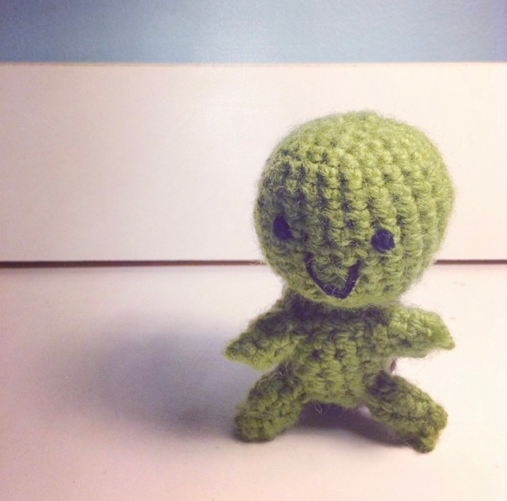

I've been crocheting many years now, and I wanted to share how I first got into it. My first experience was in maybe 2013 in my sophomore year of high school. I remember seeing a cute knit elephant and wanting to make one. I tried following a pattern in a book I borrowed from the library, and I miserably failed at it because I couldn't get the basics of knitting down.
I still wanted to make cute dolls with yarn, and I saw that you could also achieve that through crocheting. This time, I made sure to watch some Youtube videos to learn some of the basics.
My first crochet project was an amigurumi turtle from Youtube. I'm pretty sure I ended up throwing it out because I didn't think it was very good. I wish I took a picture of it so I could see my progress from my first ever project to now, but it's too late now 🥲
I probably worked on some other projects, but the first ever amigurumi that I was proud of was a different turtle from a book. I even posted it on Instagram, ugly filters and all 😂 
Because of school, I had been crocheting on an off again, but I fell back in love with it during COVID. I definitely have been whipping out more amigurumi over the past couple of years, and I even started my own crochet Instagram last year. I'm not the greatest at updating it, but I want to try documenting my crochet projects more, hence this crochet blog.
Thank you for reading this far! This crochet blog is just going to be a place where I write about anything related to crochet. I hope I can start writing my own patterns in the future, and I'll be writing about them here! I hope you enjoyed reading about my crochet journey and will continue on my journey with my blog updates 🙂
I've never actually tried writing a crochet pattern before, but this is just practice for me for when I do! You can follow the steps below to make a simple ball.
Abbreviations
Materials
Pattern
R1: mr 6 (6)
R2: 6 inc (12)
R3: (1 sc, inc) * 6 (18)
R4: (2 sc, inc) * 6 (24)
R5: (3 sc, inc) * 6 (30)
R6: (4 sc, inc) * 6 (36)
R7-13: 36 sc (36)
R5: (4 sc, dec) * 6 (30)
R5: (3 sc, dec) * 6 (24)
R5: (2 sc, dec) * 6 (18)
R5: (1 sc, dec) * 6 (12)
Fill in ball with polyfill
R5: 6 dec (6)
Fasten off and weave in ends
I've been crocheting for a while now, but I'm always learning new techniques to make my amigurumi look better! I've compiled a list of some of my favorite ones: